By No Ripcord Staff
We’ve made it to the very last section of our list and the greatest album of the period from 2000 to 2009 can finally be revealed. We hope you’ve enjoyed this series of features, and don’t forget to check back on any parts that you’ve missed along the way.
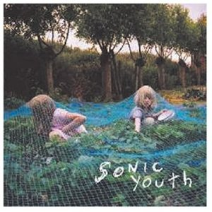20. Sonic Youth
“Murray Street”
(DGC/Interscope – 2002)
Following a template set by The Beatles, there’s a maximum decade of creativity before ideas run out and past glories start to be traded upon. So, Sonic Youth releasing one of their finest albums twenty years into their career is pretty extraordinary. And Murray Street is a pretty extraordinary album. Re-energised by the addition of Jim O’Rourke, the band run through a set of songs that tread lightly between Tom Verlaine-esque intricate guitar trade-offs and noise blow-outs. Thurston Moore’s songs are sinuous and melodic, laid-back vocals often giving way to blasts of guitar and feedback, as on the amazing Rain On Tin. Lee Ranaldo’s Karen Revisited is melancholic and wistful until it morphs into an art-noise squall-fest. Even Kim Gordon’s songs add to the album’s flow, rather than detract as sometimes occurred on previous albums. The overall impression is just one of sheer effortlessness. David Wood
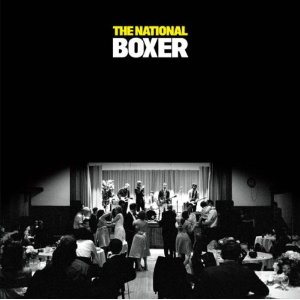19. The National
“Boxer”
(Beggars Banquet – 2007)
Inarguably one the more sobering albums on this list, The National’s 2007 opus may be the ultimate testament to passing one’s peak of youth in New York. Preceding National albums had established singer Matt Berninger’s apparent disposition for disillusioning the ideals of adulthood, mostly through the narrative of failed or neurotic relationships (stalking on Brainy; sexual fantasies on Guest Room etc.). From the opening piano chords of Fake Empire to the final seconds of Gospel, the album flows from song to song with a seamless, almost classical sense of composition. Even five years later, I am unable to listen to Mistaken For Strangers without listening to Fake Empire first. So between the Dessner brothers on guitar, Berninger’s miserable baritone, and Devendorf’s irreplaceable drum rhythms, it’s clear that Boxer is one of the greatest albums of all-time, let alone this past decade. Dave Hogg
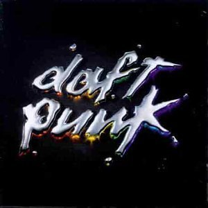18. Daft Punk
“Discovery”
(Virgin – 2001)
Some fine French albums, like fine French wines, get better with age. When Daft Punk unleashed Discovery in 2001, it was such a stark contrast from their early material (and anything else, really), that Pitchfork open-hand slapped it with a poor review. They panned the repetitive lyrics, vocoder-washed vocals, and fist-pump inducing drum beats. If that sounds like popular music today, take it as proof that Daft Punk really are from the future. Literally all tracks on the album, including the iconic One More Time and Yeezy-fied Harder, Better, Faster, Stronger, continue to be sampled for use in mash-up, house playlists, and hip-hop production. Heavily seasoned by the years, Discovery would later check in at number 3 on Pitchfork’s Top 200 of the 2000s review. Ben Jones
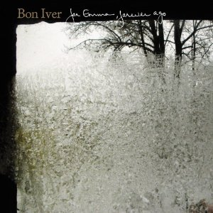17. Bon Iver
“For Emma, Forever Ago”
(Jagjaguwar/4AD – 2008)
Was there ever such a beautiful and honest album as For Emma, Forever Ago? In simpler times, quite possibly, but in a decade in which music was becoming ever more complex, for a stripped-back album like For Emma, Forever Ago to shine through and touch so many is testimony to its brilliance. Reportedly written and recorded by band leader Justin Vernon whilst spending three months in a remote cabin in Northwest Wisconsin, the isolation and personal difficulties experienced by Vernon at the time were undoubtedly major influences on one of the most emotively charged and powerful records of the decade. Craig Stevens
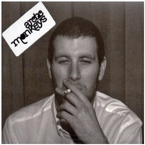16. Arctic Monkeys
“Whatever People Say I Am, That's What I'm Not”
(Domino – 2006)
Frontman Alex Turner’s first-person narratives of the Sheffield club scene spawned the UK’s fastest-selling debut album in history. The slick guitar riffs, feverish drumbeats, and gritty production didn’t hurt either. Hip-hop and R&B had dominated the charts for a half-decade, but the Arctic Monkeys were unabashedly, even brazenly, rock n’ roll. Everything about Whatever People Say I Am, That’s What I’m Not oozed controversy – from the cover art depicting a less-than-upstanding-looking gentlemen with a hazardous disregard for lung cancer, to Turner’s cynical lyrics dubbing club-goers “sexy little swine”. In many ways, it was just the shot in the arm the genre needed, just as The Strokes had administered five years prior. Time will tell how long its UK sales record holds, but time has also told that it is, undoubtedly, one of the best albums of the 2000s. Ben Jones
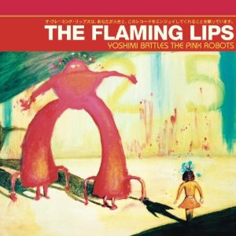15. The Flaming Lips
“Yoshimi Battles The Pink Robots”
(Warner Bros. – 2002)
I still love the Lips, but I think it’s fair to say that the boys hit some kind of peak between The Soft Bulletin and this record. The experimentation with sound was profound but was always there to serve the song, producing music that was not only fun to listen to but also just plain fun. They attain a level of seriousness by never taking themselves seriously, so it’s possible to be deeply touched by a banal sentiment like, “Do you realize that you have the most beautiful face?” This one also includes one of my favorite songs of the decade, Are You a Hypnotist??, a tour de force sonic adventure featuring quasi-robotic drumming with a totally organic groove. Alan Shulman
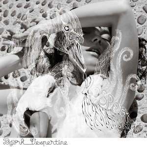14. Björk
“Vespertine”
(One Little Indian – 2001)
Glitch and micro-house are the main influences on Björk’s fourth solo album proper (discounting the soundtrack Selmasongs and pre-Debut, Björk). After the big statements, sweeping arrangements and hyperbolic emotions of Homogenic, Björk retreats to an interior space. The song structures are delicate, spindly constructions fashioned from ice and crystal, so fragile they might shatter at the merest touch. This is Björk at her most intimate and sensual. Listen to Vespertine on headphones (a good pair – not the little white ones) and you are drawn inward to a world of aural detail – the sonic equivalent of a macro photograph. Clicks and pops rub up against music box tinkles and harps, with the vocals at their most breathy and sexual. Björk has always had one foot in the avant-garde and one in the pop world. Vespertine is her finest example of such a balancing act. David Wood
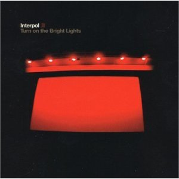13. Interpol
“Turn On The Bright Lights”
(Matador – 2002)
Some albums stand out because of peaks that illuminate an otherwise pleasant, if nondescript, backdrop; others make their case through consistency without ever shifting up a gear. Now and again, the right kind of band will find a way to take those moments and construct an album out of them, attacking their project with such naked ambition as to make every second count – not a single note wasted, everything in its right place. And it will end up feeling truly special, a blue-moon kind of 'event' that shakes the music world to its core, realigning the entire scene they work within, through little other than sheer brilliance. Turn On The Bright Lights isn't one of those albums; it's even better. It is utterly transcendent – as close to flawless a record as you'd find in the decade just past. They've never bettered it; but, honestly, who has? Gabriel Szatan
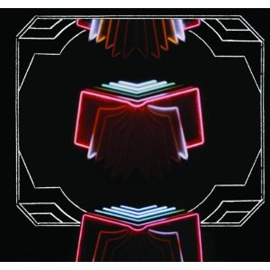12. Arcade Fire
“Neon Bible”
(Merge – 2007)
Arcade Fire have managed to consistently build upon the concepts and successes of each album, and Neon Bible, their second full-length of the decade, saw them empty their cannon as far as compelling rock/folk/pop tunes are concerned. Despite the unbridled success of its predecessor, Funeral, Neon Bible became the album that brought the mainstream to them rather than the opposite. They are a band who are sceptical of the world outside; who tackle social and philosophical issues within their music; but who ultimately within their sphere of explosive sound write of the truth and, more importantly, turn that truth into irrepressibly addictive and uniquely inspiring songs. Matt Bevington
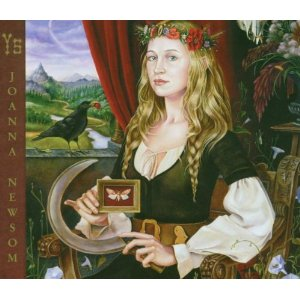11. Joanna Newsom
“Ys”
(Drag City – 2006)
Ys is not so much an album as it is a world in which to immerse yourself completely. It is so complexly ornate, and not just lyrically – her bending harp lines, inimitable delivery, and Van Dyke Parks’ overflowing string arrangements can make even single lines contain more character than any other band could fit into an entire song. The whole thing sustains dense layers of metaphors, using fantasy and archaism to create a striking angle on the real, present-day world. It’s intimidating in its ambition but so worth sticking through, because Newsom manages to sound astonishingly emotional while performing such intricate, intellectually-challenging music, never once seeming austere or unnecessary. I could think of hundreds of moments which make my spine tingle, and I will still be finding new ones hundreds of listens later; I love and treasure this album like no other. Stephen Wragg
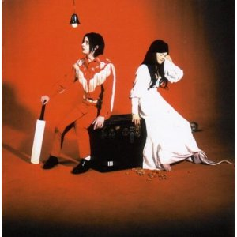10. The White Stripes
“Elephant”
(V2/XL – 2003)
Blues music doesn’t often find any significant recognition within the music press, mainly due to its over-worked format and stylisation. However, what The White Stripes did was cover it with so much thudding chaos that we wouldn’t realise. This album marks The White Stripes as major label artists and despite the horror at their garage punk heroes having ‘majored,’ even the stoutest of indie sensationalists cannot suggest it softened their approach at all. Let us of course remember a significant fact about this album, that it went to No.1 in the UK where they had only previously charted at No. 55. A testament to the major label but, I would like to think, a good portion of the credit goes down to White’s screeching and incoherent guitar style, the likes of which the rest of us will only hear again on our way through the bowels of hell. Matt Bevington
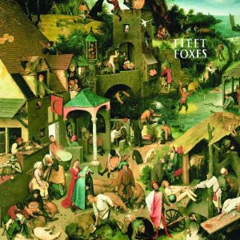9. Fleet Foxes
“Fleet Foxes”
(Bella Union/Sub Pop – 2008)
The liner notes tells us about music’s transportive quality, which help us connect with half-forgotten memories. I propose that this band’s music goes further. It connects us with times and places that are beyond our own experience. You’ll hear in Robin Pecknold’s songs echoes of medieval chanting, madrigals, church chorales, and mountain-men laments. Everything blends together seamlessly, despite the album’s long gestation through a piecemeal process. It paid off in a great debut that catapulted the band to the top rank. Some imitators have come in their wake – it seems the pop world has rediscovered harmony all of a sudden – but Fleet Foxes keep moving ahead of the pack. Angel Aguilar
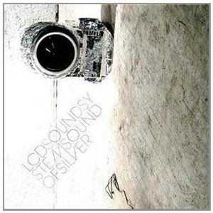8. LCD Soundsystem
“Sound Of Silver”
(DFA/Capitol - 2007)
If I’m ever recommending a band or an album to a friend I always struggle to give people a track to try from Sound Of Silver. Do I pick the obvious one, North American Scum? Do I go for a heartfelt track like Someone Great, which is pretty much as elegiac as disco can ever get? Something cool and punchy like Us V Them? And that’s ignoring All My Friends... No other album is so simultaneously cool, sincere and still cohesive. I mean, a dance album ending with a piano ballad? Every time I hear that opening chord of the final track, or the xylophone intro to Someone Great, or the repeating piano on All My Friends, or the deep synths on Get Innocuous, I get shivers down my back. Those numinous moments are what brilliant music is all about. James McKenna
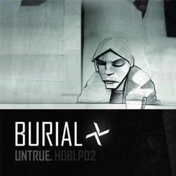7. Burial
“Untrue”
(Hyperdub – 2007)
Burial's Untrue is the 2000s supreme exemplar of sonic cartography. Part of what intrigues me about electronic music is how a musician can make use of their equipment to represent where they’re from. For Londoner Burial, focusing on the culture surrounding the rave, grime, jungle and garage scenes of the 90s expands into focusing on the architecture, cultural transportability, and digital alteration of those scenes, and his city. Fashioning that focus into a listenable, associative experience is what makes all of the cracks, altered voices, machine-gun beats, and ambient swirls resemble the lines, words, colors and symbols that make up a map of London. Untrue shows how cartography and music-making can be one and the same, and how city-living and music-making can be one and the same. It shows how by just being in an environment, that environment in turn becomes a piece – however small, however inconceivable – of you. Michael Iovino
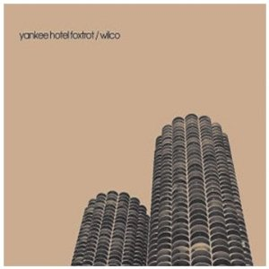6. Wilco
“Yankee Hotel Foxtrot”
(Nonesuch – 2002)
It’s practically impossible to say anything new about Wilco’s magnum opus, Yankee Hotel Foxtrot. Its protracted genesis was well-documented in Sam Jones’ I Am Trying to Break Your Heart: A Film About Wilco; it received high praise on release (including a glowing 9/10 review on these pages); and it enjoyed another wave of acclaim at the end of the decade, when various publications rightly named it one of the very best records of the 2000s. Personally, I consider Yankee Hotel Foxtrot to be the defining record of the decade. Like the other main contender, Radiohead's Kid A, it was a radical departure from its predecessor, but Jeff Tweedy and Wilco were not just exploring a new palette of influences; nor were they ripping up the rule book and starting again. This record feels like a natural evolution, one that came from within and obviously one that caused a whole load of friction on the way. It’s a very personal record, and the additional context added by Jones’ documentary does add additional weight to its lyrical impact. Not that Yankee Hotel Foxtrot has ever struggled to make an impact, of course. Truly, this is one of the greats. David Coleman
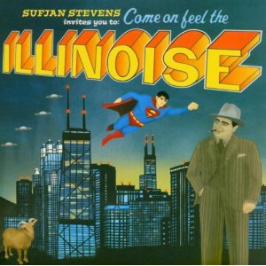5. Sufjan Stevens
“Illinois”
(Asthmatic Kitty/Secretly Canadian/Rough Trade – 2005)
It simply was too impossible to achieve, right? Who knows what went through Sufjan Steven’s head when he considered the mammoth undertaking of completing a fifty state love letter for each of the United States. But Illinois was conceived in a fit of righteous brilliance, driven by a self-assured artist who knew he had had towered his own expectations with that first trail test. While Michigan was a wistful lyrical paean to his home state, Illinois felt more like opening a novel in which its protagonist reaches new land and documents his findings with starry-eyed wonder. Stevens’ bookish tendencies combined with his finely layered orchestral suites make for a stirring travelogue filled with tragedy and triumph. And this coming from a publicly coy, yet freakishly impudent wunderkind whose substantial amount of talent is as high as the landkmark buildings the state is known for. An act of irrational overreaching, yes, but an enthralling one at that. Juan Edgardo Rodriguez
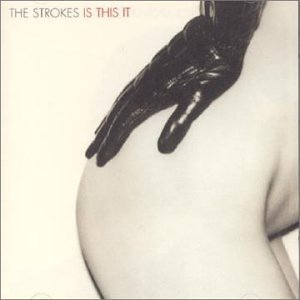4. The Strokes
“Is This It?”
(RCA – 2001)
Out of the garage and into the limelight, Is This It? was transformational for both the Strokes and the legion of disaffected youth that quickly formed rank behind them. It was fresh and cool, sharply composed, and performed with a rare degree of confidence reserved for those who possess immense talent and care nothing about it (or anything else, really). The hitherto unknown Julian Casablancas slurred small stories of big city life through lo-fi equipment, backed by snappy snare drum rhythms and needling guitar lines. The album sold more than a million copies, but its influence spread far beyond the commercial realm. Kids traded in saggy pants for skinny jeans, and an app that makes images look instamatic was just bought for $1 billion. As is the measure of any great album, after Is This It? was released nothing that followed was quite the same. Ben Jones
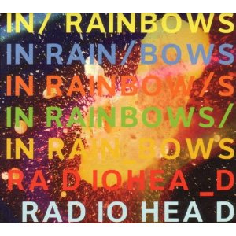3. Radiohead
“In Rainbows”
(self-released/XL – 2007)
Although In Rainbows’ acclaim was diluted by talk of the pay-what-you-want release system, by the decade’s end it was clear that it was a dark horse in the inescapable ‘favorite Radiohead album’ conversation. By departing from the more rock-oriented Hail To The Thief and opting for slower tempos, the band found composition and confidence more effortlessly than ever. Every silky smooth guitar hook, every haunting bass line, every instantly recognizable rhythm, and every seductive croon saw Radiohead break new ground and create more career highlights than even the most fervent die-hards could reasonably expect. Whether it’s the intense desperation of the lyrics that affect you or the sexy hooks that make you move, In Rainbows is undeniably unique in the catalog of a band known for being unique. It’s no surprise so many call the group’s seventh effort yet another masterpiece. Forrest Cardamenis
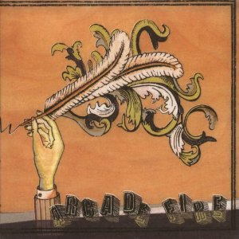2. Arcade Fire
“Funeral”
(Merge/Rough Trade – 2004)
Number one in our list of the Top Albums of 2004 and second only to The Velvet Underground in our list of the Top 100 Debuts of all-time, it was pretty much a given that Arcade Fire's Funeral was going to make an appearance fairly high up on our list of our Top 100 Albums from 2000-2009. The first in a series of highly acclaimed albums from one of the most exciting bands to emerge in the decade, Funeral is a theatrical, powerful, emotional indie rock album, popular with critics and fans alike and which, ironically given its title, has an appeal that will forever live on. Craig Stevens
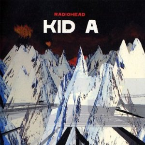1. Radiohead
“Kid A”
(Parlophone/Capitol – 2000)
If OK Computer was rock's great last gasp against the encroaching dominance of the digital revolution, then Kid A was its brilliant surrender. The first sampled words out of Thom Yorke's mouth on Everything in Its Right Place feels like the last shot in Phillip Kaufmann's Invasion of the Body Snatchers, when Donald Sutherland opens his mouth and lets out the piercing scream of the Pod People. The final hope for heady, guitar rock has succumbed. Yet, there remains a human heart beating arrhythmically against the fixed time of the ones and zeroes. National Anthem rages against sterility with a forceful drum and bass groove but admits defeat by dissolving into a chaotic cacophony of free-jazz horns. Now the soul is adrift in a sea of strumming acoustic guitars on How to Disappear Completely, as Yorke resignedly admits "I'm not here/this isn't happening". The band tries to mount a rear guard attack with the ironically named Optimistic, but it is to no avail and the record ends with an elegy on harmonium, as in one culminating moment the chords move chillingly from the tonic to the Major 3rd, into the Minor 6th, descending to a major 4th, and Yorke waves goodbye, his voice climbing to the heavens: "I will see you/in the next life". Alan Shulman
Agree? Disagree? We’d love to know your big-hitters of the decade. Let us know using the Disqus form below.
13 July, 2012 - 07:50 — No Ripcord Staff